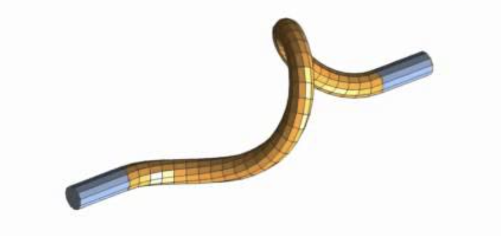
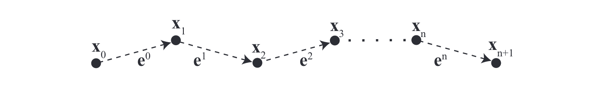

Discrete elastic Rod (DER)
Hangqi Cui - Nada Abdelwahab - Suneh Bhatia
What is a Discrete Elastic Rod?
- Kirchhoff rod 
- Discrete polyline ( primals and duals) 
Solve Dynamics!
- Rope/Cable
- Viscous thread
- Hair simulation
Standard setup:
$$ \text{Energy} \rightarrow \text{Force} \rightarrow \text{Acceleration} \rightarrow \text{Position} $$
Two important assumption
- Inextensible rod
- Quasitic Update
Bishop Frame
Twist is independent from the curve
Tangent, normal and binormal.
- Tangent is always deterministic in the discrete curve.
- Set up a reference frame (normal)((0,0,1)) at the beginning of the curve.
- $ B = T \times N$
Parallel Transport
Construct the remaining normals iteratively.
A roation matrix using axis and angle.
$ N^{i+1} = P^i * N^i $
Material Frame
Simply rotate u and v in twisting angle $\theta$

Curvature and Darboux vector
Surprisingly Many ways to approximate curvature, and receive difference results!
$\kappa = 2 \tan \frac{\theta}{2}$
Darboux vector- rotation vector of the curve with curvature $\kappa$
$\Omega = \kappa b$
Dynamics 101
$$ F = dE \qquad E = \int F dx $$ $$ F = ma \rightarrow {\partial E\over \partial x}=M\ddot{x} $$
Energies and Forcies (continous case)
- Elastic Energy: 0
- Bending Energy : $$ {1\over2}\int \alpha \kappa^2 ds $$
- Twisting Energy: $$ {1\over2}\int \beta (\theta ^i)^2 ds $$
- $\alpha, \beta$: Material modoulus
Energies and Forcies (discrete case)
- Elastic Energy: 0
- Bending Energy : $$ E_{{bend }}(\Gamma)=\frac{1}{2} \sum_{i=1}^n \alpha\left(\frac{\kappa \mathbf{b}_i}{\bar{l}_i / 2}\right)^2 \frac{\bar{l}_i}{2}=\sum_{i=1}^n \frac{\alpha\left(\kappa \mathbf{b}_i\right)^2}{\bar{l}_i} $$
- Twisting Energy: $$ E_{{twist}}(\Gamma)=\sum_{i=1}^n \beta \frac{\left(\theta^i-\theta^{i-1}\right)^2}{\bar{l}_i}=\sum_{i=1}^n \frac{\beta m_i^2}{\bar{l}_i} $$
- Voronoi weight: $$ l_i = |e^{i-1}| +|e^i| $$
Symplectic Euler
Symplectic Euler, Forward Euler, Backward Euler
$$ a = {dv\over dt}, \qquad v = \int a dt $$ $$ v = {dx\over dt}, \qquad x = \int v dt $$ $$ F = ma \quad $$
Constraints
- Manifold Projection : Maintain the shape of the curve
- Remeber the curve is inextensible?
- Twist holonomy : Update twisting angles
- Another assumption: twist is updated simutaneously

Experiments
Follow up researches (In the past)